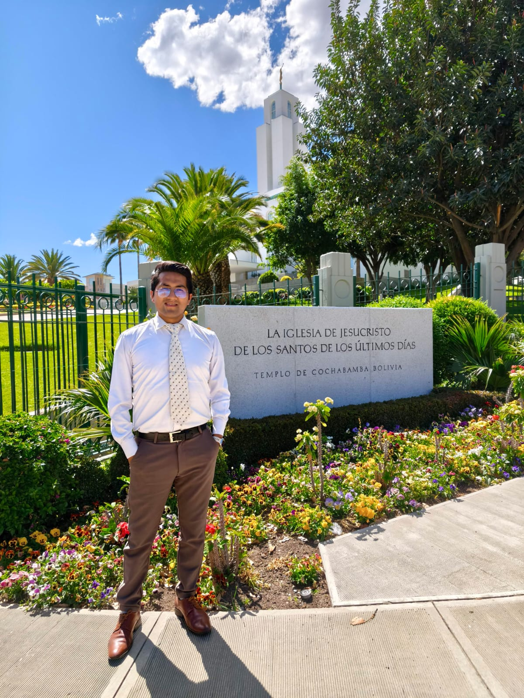
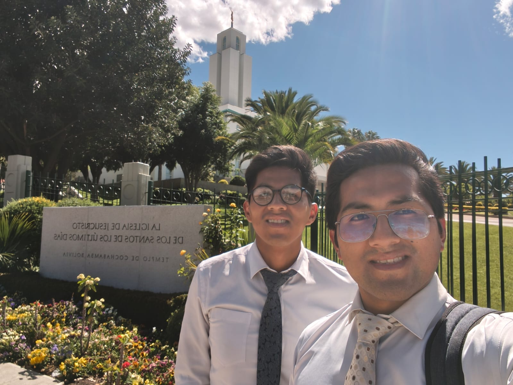

Task 1
Principles and description
Honesty
I know that something that brings me security and peace of mind was having honest actions in my life when I was honest with my relatives and the people. I felt quiet and with the desire to do good things thanks to the Church and the teachings I received Sunday after Sunday mi commitment to apply this principle grow so much This helped me in my journey for my job because my employers see that I was confident person for the different roles I had in the bank and I was promoted for this valuable principle in my life in fact with honesty we are qualified for this life on earth and for the heavens that´s why I liked how well is described in the scriptures that word honesty and integrity both are related and are together because if we fail in being honest we fail in our integrity as a person here or in other part is the same.
Experience
I remembered an experience regarding honesty that taught me a great deal. When I worked as a bank teller, there was always a temptation to cheat or steal, given that we handled cash all day. People would come to the bank, and we had to verify the money they handed us. On one occasion, I received a counterfeit bill. I immediately remembered what my bishop had told me when I first started the job: if you ever receive a counterfeit bill and decide to pass it on to an elderly person during a transaction—thinking they might not notice—you would be starting a chain of wrongdoing, as that person would likely try to pass it to someone else. In doing so, you would be harming not just one individual, but potentially thousands. That lesson left a deep impression on me; I learned that honesty is a valuable principle to apply in every aspect of life and to teach to others, so that we might avoid this chain of wrongful acts—acts where only the adversary soothes us and lies, claiming that everything is fine and that there is nothing wrong with such behavior.
Work and Responsibility
Hard work and a sense of responsibility regarding the tasks and roles I undertook—both at university and in the workplace—have been fundamental principles in my life. Thanks to my dedication and diligence in fulfilling my church responsibilities, I experienced great blessings; notably, the leadership skills I developed there translated directly to my professional life. By consistently demonstrating responsibility in my assigned duties, I quickly caught the attention of my superiors and was promoted to various positions. In fact, I was even invited to apply for a role in a new area because I had successfully met the goals set for my previous position. Being responsible and working hard has been essential to achieving my goals throughout the different stages of my life.
Experience
One of the experiences that taught me the most about work and responsibility occurred during my time in a customer service role. I handled numerous people with issues and questions regarding their accounts and transactions, all while meeting performance targets set by the bank to assess my potential. Juggling these tasks was challenging due to the demands of the position, yet I set a goal to succeed. Thanks to the targets I met, my supervisors recommended me for a promotion to a new department based on my experience and strong performance. That experience taught me that we are often our own biggest obstacles to growth—both professionally and personally.
Sacrifice
Sacrifice has been a fundamental principle in my life for getting opportunities and achieving goals in both my professional and working life. At university, I was often given assignments that required hours of study and entire nights of work to complete. Similarly, to be an exemplary employee, I frequently had to sacrifice time with family and friends to meet the required objectives. However, this led not to regret but to success; as I learned in church, sacrifice brings blessings. That is how I managed to finish university and earn my accounting degree, secure a good job at a bank, and—through sacrifice—grow spiritually in the various callings I held, witnessing the results as more people joined the church.
Experience
One of the experiences that left a lasting impression on me regarding sacrifice occurred during my final year of high school. I had many responsibilities: first, finishing school with good grades; second, completing my fourth and final year of seminary to graduate; third, working nights and early mornings at an oven near my home to save for university expenses; and fourth, attending a university preparatory course to gain admission. It was undoubtedly a year that demanded great sacrifice due to these many responsibilities, and I had to give up sleep to achieve my goals. The blessing was that, by the end of the year, I met every objective: I finished high school with good grades and as the top student in my class, graduated from seminary, saved a significant amount of money from my night job, and successfully gained admission to the university through the preparatory course. It was a source of immense joy and taught me that sacrifice is part of life—and that we must make many sacrifices to see our goals realized.
Material Collected
Task 2
PROFESIONAL GROWTH PORTOFOLIO
Introduction
I am a detail-oriented professional with a strong foundation in banking operations and accounting, currently expanding my expertise into Information Technology at BYU. I specialize in bridge-building between traditional financial systems and modern technology, leveraging a proven track record of absolute accountability to deliver high-quality support and technical solutions. Driven by international aspirations, my goal is to combine financial compliance with modern IT infrastructure to optimize business systems on a global scale.
Technical & Professional Skillset
-
Financial & Business Systems: Financial accounting, banking compliance, risk management, and transactional auditing.
-
Information Technology: System analysis, technical troubleshooting, database concepts, and emerging IT methodologies.
-
Core Strengths: Rigorous professional responsibility, value-driven leadership, intercultural adaptability, and rapid skill acquisition.
Featured Project Frameworks
Project 1: FinTech & Banking Systems Analysis
-
The Challenge: Managing complex financial workflows under strict regulatory compliance at Banco Union.
-
My Role & Strategy: Applied strict operational accountability to execute tasks, identify process bottlenecks, and ensure data integrity.
-
The Measurable Outcome: Maintained a zero-error record in task execution, resulting in recognition for professional excellence and selection for high-priority university/corporate opportunities.
Project 2: Systems Integration (Academic/BYU PATHWAY)
-
The Challenge: Bridging the gap between financial tracking and modern IT infrastructure.
My Philosophy & Values
Purpose-Driven Growth: I believe that technical expertise is most powerful when guided by enduring ethical values. My education at BYU has refined my approach to learning, ensuring that integrity, service, and guidance remain at the center of every technical solution I deploy.
ETHICAL DILEMA ANALYSIS
In 2005, Google acquired Android and wanted to build a mobile operating system that would attract a vast community of developers. To make the platform immediately familiar, Google engaged in negotiations to license Sun Microsystems' popular Java platform.
When those licensing talks fell through, Google decided to forge ahead independently. They meticulously wrote their own "implementing code" from scratch. However, to ensure Java-trained developers could easily transition to Android, Google copied exactly 11,500 lines of declaring code across 37 Java APIs along with their unique structure, sequence, and organization (SSO). In 2010, Oracle bought Sun Microsystems and promptly launched a massive lawsuit against Google, seeking up to $9 billion in damages.
Analisys
The ethical analysis of this case can be viewed from two contrasting philosophical perspectives to understand what transpired. The first is utilitarian ethics—a results-oriented approach—which suggests that Google’s actions were ethical because they maximized public and professional benefit. By copying the 11,500 lines of code, Google enabled various developers to utilize the associated knowledge. What were the benefits? This prevented a monopoly on knowledge held by the original developers, accelerated mobile technology advancement, and created a massive, free open-source resource that benefited many consumers. The second perspective is deontological ethics—a duty-based approach. This view holds that Google’s actions were unethical; the company had a duty to respect the intellectual property and creative decisions of Sun/Oracle regarding the code's structure, sequence, and organization. When the license was denied, Google acted dishonestly, disregarding the fact that the code’s authority relied heavily on Sun—a decision that ultimately led to legal complications.
What I learned from this analysis is that intellectual property ethics rarely allow for a clear distinction between right and wrong. From a duty-based perspective, disregarding the agreements Google made to reuse code and structures protected by property rights is considered unethical. However, from a utilitarian perspective, reusing interface names to leverage developers' skills and expertise prevents monopolies in the information technology market, thereby enabling large-scale public innovation—an approach that the U.S. Supreme Court ultimately deemed legally permissible, or "fair use."
Resume
Task 3
TEMPLE EXPERIENCE
My journey to the temple began the moment I started reading assignment number 3 for this week. I was truly surprised by what I had to do, as I hadn't expected an assignment like that. It undoubtedly strengthened me; we often underestimate the opportunity to go to the temple and take it for granted. As Elder Renlund said in his talk, we neglect the things that are valuable and that strengthen our spirit. So, this week I set a goal to go to the temple. I usually work Monday through Friday, and the temple is a ten-hour journey from my home. I prepared for the trip and set the date, eager to travel on Friday night and arrive on Saturday. However, something always happens when I plan to go to the temple; the adversary works hard to discourage us or prevent us from attending. On Friday, as I was leaving work, it started raining heavily in my city, which discouraged me from leaving early for the bus terminal. I waited for the rain to stop, but it wouldn't let up. Refusing to give in to discouragement, I decided to go anyway and set out despite the downpour. Before I left, my mother had arrived and mentioned that she had changed the door lock and there was only one key. She had neglected to keep it with her, so when I stepped out for the terminal and closed the door, we found ourselves locked out. We tried various keys we had on hand to see if we could open the door, but nothing worked I was about to give up—both on the trip and on dealing with the rain and this problem—yet deep down, I prayed to open the door and begin my journey. Finally, on one last attempt, the door opened. I felt relieved and hurried to start my trip; I arrived at the terminal soaking wet, found a bus, and made my way to the temple. Upon arrival, I felt a sense of peace and tranquility. I met up with my younger brother, who lives here for his studies, and we went to the temple together.
Without a doubt, the temple is the Lord's house, a place where one feels His Spirit and prayers are answered; by remembering our covenants, we strengthen our spirit. Throughout my life, I have felt that we will always face obstacles—even in our work and professional lives, where we may often feel discouraged or lack answers to challenges. Yet, I have learned something over time: giving up and succumbing to discouragement have no place for someone who perseveres and remains faithful to the covenants made with Heavenly Father. That has strengthened me and taught me to always wait on the Lord and let Him do the rest once we have done our best and acted rightly; He knows our thoughts, deepest desires, and weaknesses, and He knows how to help and come to our aid.

